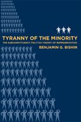

<body bgcolor="#FFFFFF" text="#000000" link="#0000FF" vlink="#CC0000" alink="#CC0000"><center><hr width="350" size="1" align="center" noshade>Why do subconstituencies defeat the people's will in American politics?<hr width="350" size="1" align="center" noshade><p><a href="https://cdcshoppingcart.uchicago.edu/Cart/ChicagoBook.aspx?ISBN=9781592136582&&PRESS=temple" target="_top">Buy this book!</a> | <a href="https://cdcshoppingcart.uchicago.edu/Cart/Cart.aspx?PRESS=temple" target="_top">View Cart</a> | <a href="https://cdcshoppingcart.uchicago.edu/Cart/Cart.aspx?PRESS=temple" target="_top">Check Out</a></p><p></p></center><!--none//--><h1>Tyranny of the Minority</h1>
<H2>The Subconstituency Politics Theory of Representation</H2>
<h3>Benjamin G. Bishin</h3>
<P>cloth 1-59213-658-3 $65.50, Mar 09, <FONT COLOR=#990033>Available</FONT>
<br>paper 1-59213-659-1 $31.95, <FONT COLOR=#990033>Available</FONT>
<br>Electronic Book 1-59213-660-5 $31.95 <FONT COLOR=#990033>Available</FONT>
<BR> 216 pp
6x9
56&nbsp;tables 7&nbsp;figures
</P><BLOCKQUOTE><I><p>"In </i>Tyranny of the Minority<i>, Bishin makes a valuable contribution to the
literature by asking why minorities sometimes get their way over majority wishes. He makes a compelling case, presenting the conflicting implications
of majoritarian representation models. This is a very well-written, clear and interesting book, and Bishin's work invites vigorous future debate. If you are interested in democratic theory, the logic of representation, and congress in general, you will want to read this book."</i><BR>&#151<b>Robin Kolodny</b>, Associate Professor of Political Science,
Temple University</p></I></BLOCKQUOTE>
<p>Why do politicians frequently heed the preferences of small groups of citizens over those of the majority? Breaking new theoretical ground, Benjamin Bishin explains how the desires of small groups, which he calls �subconstituencies,� often trump the preferences of much larger groups.</p>
<p><i>Tyranny of the Minority</i> provides a �unified theory of representation,� based in social psychology and identity theory, to explain how citizens� intensity fosters knowledge and participation and drives candidates� behavior in campaigns and legislators' behavior in Congress. Demonstrating the wide applicability of the theory, Bishin traces politicians' behavior in connection with a wide range of issues, including the Cuban trade embargo, the extension of hate-crimes legislation to protect gay men and lesbians, the renewal of the assault-weapons ban, abortion politics, and Congress's attempt to recognize the Armenian genocide. He offers a unique explanation of when, why, and how special interests dominate American national politics.</p>
<BR>&nbsp;<h2>Excerpt</h2><P>Excerpt available at <a href="http://www.temple.edu/tempress">www.temple.edu/tempress</a></p>
<BR>&nbsp;<h2>Reviews</h2>
<p><I>"</I>Tyranny of the Minority <I> addresses fundamental questions about democracy with a careful and methodologically sophisticated approach. I found the argument of this book to be creative and persuasive. It should have a lasting impact on the literature on representation."</I>
<br>&#151<b>Vincent Hutchings</b>, University of Michigan
<p><I>"The power of some minority groups to continually fend off majority interests through democratic representation has long been under-theorized. Bishin's fascinating and empirically sophisticated account of subconstituency politics is a welcome remedy, and it is absolutely vital for any understanding of American democracy."</I>
<br>&#151<b>Paul Frymer</b>, Princeton University
<p><i>"Bishin offers a readable and well-documented account aimed at moving past the limitations of existing representation research.... [H]e provides a unique explanation of how, when, and why special interests dominate American national politics.... Bishin�s book, which is accessible and thorough, should attract readers among the general public, with both undergraduate and graduate students as well as scholars." </i>
<br>&#151<b><i>APSA Legislative Studies Section Newsletter</i></b>
<p><i>"Bishin offers a compelling theory to explain why politicians do not always live up to the democratic ideal.... Overall, this work represents an important theoretical and empirical contribution to the study of legislative representation. Future research in this area will have to account for the subsconstituency theory and the findings produced by Bishin in this book."</i>
<br>&#151<b><i>Contemporary Sociology</i></b>
<BR>&nbsp;<h2>Contents</h2><P>
<p>Preface
<br>1. ��Quitemos a Castro Ahora!�
<br>2. The Subconstituency Politics Theory of Representation
<br>3. Overcoming Ignorance and Apathy: Testing Individual-Level Implications of Representation Theories
<br>4. Subconstituencies in Campaigns
<br>5. Subconstituencies in Congress
<br>6. Heterogeneity and Representation Reconsidered
<br>7. The Myth of Issue Visibility
<br>8. Conclusion
<br>Notes
<br>References
<br>Index
</P><BR>&nbsp;<H2>About the Author(s)</H2>
<P><b>Benjamin G. Bishin</b> is Associate Professor of Political Science at the University of California, Riverside.</P>
<BR><H2>Subject Categories</H2>
<p><A HREF="/tempress/political.html" TARGET="_top">Political Science and Public Policy</a>
<BR><A HREF="/tempress/social.html" TARGET="_top">Community Organizing and Social Movements</a>
</p>
<p align="center"><a href="https://cdcshoppingcart.uchicago.edu/Cart/ChicagoBook.aspx?ISBN=9781592136582&&PRESS=temple" target="_top">Buy this book!</a> | <a href="https://cdcshoppingcart.uchicago.edu/Cart/Cart.aspx?PRESS=temple" target="_top">View Cart</a> | <a href="https://cdcshoppingcart.uchicago.edu/Cart/Cart.aspx?PRESS=temple" target="_top">Check Out</a></p><p><font face="Arial" size="1"><a href="copyright.html" onMouseOver="window.status='Web Copyright Policy';return true;" onMouseOut="window.status=''" title="Web Copyright Policy">&copy;</a> 2015 <a href="http://www.temple.edu" target="new" onMouseOver="window.status='Link to Temple University home page';return true;" onMouseOut="window.status=''" title="Link to Temple University home page">Temple University</a>. All Rights Reserved. http://www.temple.edu/tempress/titles/1996_reg.html</font></p>